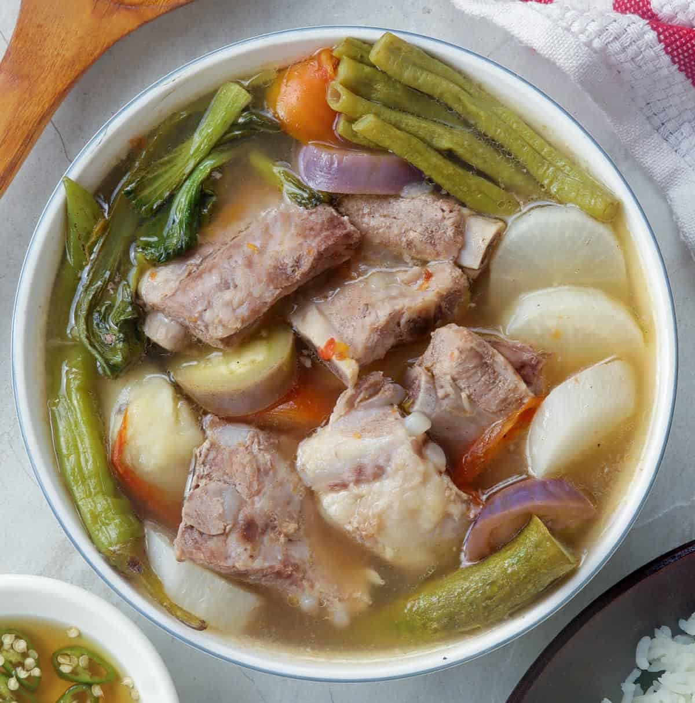

Sinigang
"
height="800" width="600">
Sinigang is a Filipino tamarind based stew typically made with pork spare ribs and the vegetables of the cook's choice.
If you're looking for something comforting to eat on a cold, rainy day, then this is a great dish to eat.
Its a very versatile dish where you can substitute the protein to your liking with fish, such as salmon, shrimp, pork belly, or even beef.
You can use as little or as many vegetables as you like and any combination of them.
There a variety of protein options to choose from, but this recipe specifically is using pork spare ribs.
Feel free to choose any other protein! If you're using pork belly or beef, one recomendation I have
is to keep your protein in 1-2 inch chunks. With shrimp you can cook them whole with the shell on.
Then with salmon or other fish, keep the meat in large chunks.
While you decide to include one vegetable or another, the tomato and onion are not optional!
The tomato helps add acidity to the soup and the onion helps add a touch of sweetness.
And if you have the tolernace for it, my dad likes to add whole spicy peppers.
Ingredients
-
Protein of your choice ~1 lb
- Pork spare ribs, cut length wise
- Pork belly
- Salmon
- Shrimp
- Beef
- Vegetables (the optional veges used in this recipe will be italicized.
- Mandatory
- 2 roma tomatoes
- 1 small yellow onion
- Optional
- Green beans
- Daikon radish
- Eggplant
- Taro
- Okra
- Bakchoy
- Seasonings
- Fish sauce (preferably Filipino, but any should work!)
- Tamarind soup mix packet (I like the one by Knorr)
Cooking Instructions
- Prep your vegetables
- Roma tomatoes - dice
- Onion - slice
- Green beans - cut ends, cut into 3-4 inch pieces
- Daikon Radish - peel, cut root end, cut into 1/2 inch rounds
- Taro - peel, cut into ~2 inch chunks
- Eggplant - cut stem end, cut into thirds and then into quarter wedges. Don't cut all the way through when quartering.
- Get a large pot, add oil, and turn the stove to medium heat
- Once oil is hot, add tomato and onion. Saute until softened.
- Add the pork spare ribs. Cook until brown on the outside.
- Add water to the pot. Just enough to cover the meat.
- Bring the pot to a boil then down to a simmer. Simmer until the pork is tender (about 30-25 minutes).
- While the pot is simmering, check occasionally to skim scum and fat from the top of the water.
- Add seasoning packet to taste. I recommend starting with half then adjusting later. Also add 1 TBSP of fish sauce.
- Add taro and radish. Cook until barely tender.
- Add eggplant and green beans. Cook until barely tender.
- Turn off the heat and keep the lid on. The vegetables will cook with the remaining heat.
- Your sinigang is done! Plate and serve with rice!